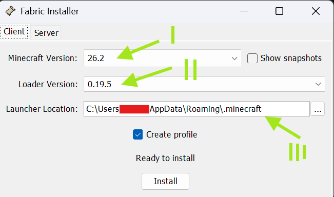
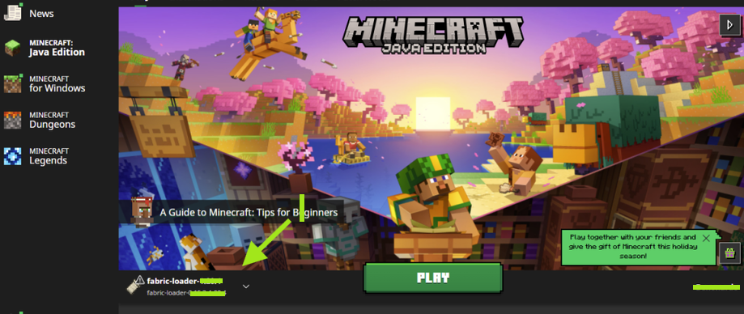
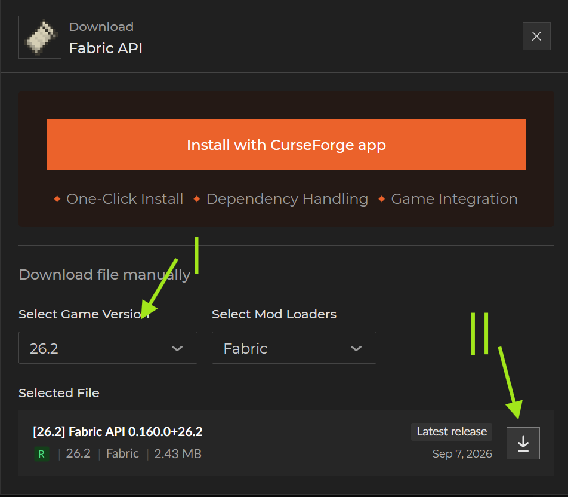

Install your mod loader
Shop Logger ships for both Fabric and NeoForge, each for Minecraft 26.2 and 26.3 (1.21.11 and 26.1 are no longer supported). Pick whichever loader you already use — if you're not sure, Fabric is the more common choice.

Download and run the official Fabric installer (or the NeoForge installer if that's your loader).
- Set Minecraft Version to 26.2 or 26.3 — whichever you play on.
- Leave Loader Version on the most recent one (selected by default).
- Check Launcher Location is right — the default is almost always correct.
- Make sure Create profile is ticked, then press Install.

Launch the new fabric-loader-… (or NeoForge) profile once before continuing — that's what creates the mods folder you'll need in a moment.
Fabric API (Fabric only)
Fabric API is a library mod Shop Logger depends on to run at all — NeoForge doesn't need this step, its equivalent is bundled with the loader.

Grab it from CurseForge or Modrinth — match the same game version you just installed (26.2 or 26.3), and save the file somewhere you'll remember.
Download & install Shop Logger
Grab the mod itself from the Trading Post's home page — the download button picks the right file for your loader and version automatically.

- Pick your mod loader and Minecraft version, then download.
- Open your
modsfolder — paste%appdata%\.minecraft\modsinto a File Explorer address bar, or open it straight from your launcher's install screen. - Drop the downloaded
.jarin (plus Fabric API's.jar, if you're on Fabric). - Launch the profile again — you're in.
How the scanning actually works
Once it's installed there's nothing to turn on — the mod scans automatically the moment you're near a shop chest, and uploads in the background every 15 minutes while you keep playing.
- It opens every shop chest within reach to read its contents — you won't see the inventory screen, but you may notice chests visually opening and closing near you. That's expected, not a bug.
- Data uploads to the website automatically every 15 minutes; a fresh listing can take up to 15 minutes to actually show up on the site.
- Yellow inventory slots mark items available to rent at
/pw RentARare(Firefly) or/pw tool_library(Honeybee). - The auto-scanner won't right-click while you're holding a name tag or a feather — so it can never accidentally redeem a fly token for you.
The settings menu
Press X in-game to open the mod's menu — your watchlist, manual upload, and an Advanced Settings screen for tuning exactly how it behaves.
/shops plot info, at most once/hour per shopThe main settings screen was reorganised to be simpler — day-to-day toggles live there, and anything more niche moved to Advanced Settings so it doesn't get in the way.
/search any time to look an item up without leaving the game — it'll open either a GUI or use chat, depending on your setting above.Watchlist & alerts
Add an item to your watchlist and the mod pings you the moment it (or anything close enough) shows up — from a shop scan or a marketplace post — with a price threshold so you're not alerted about overpriced listings.
- Set a max price with one tap using the quick buttons (1, 5, 10, 15, 20, 25, 32, 48 blocks) right in the item options.
- Each watchlist row has its own Search button that jumps straight to that item's page on the website.
- Alerts fire for marketplace posts too, with a clickable link straight to the listing.
- The watchlist screen remembers your search text and scroll position when you come back to it.
Mapart scannerNEW in 2.0
Built right into the mod: walk near a wall of item-frame mapart and it finds it, stitches the individual maps back into one full picture, and uploads it to the mapart catalog — no separate tool, no chat spam.
- Everything heavy — stitching, encoding the image, uploading — runs on a low-priority background thread. The game thread only reads frames and hashes their pixels, so it never freezes your game.
- Nothing gets printed to chat, and there's no separate
/mapartworldcommand — the mod already knows which world you're in from its own detection, and only scans once that's confirmed. - Toggle it off entirely from the X-menu if you'd rather not scan mapart at all.
Reporting & ignoring listings
Spot a scam or a stale listing while you're playing? Handle it without ever opening a browser.
Report — a red button on watchlist alerts and in listing lists. One click, once per listing per session, flags it for review.
Ignore this listing — a grey button that stops that exact listing from alerting you again, without taking the item off your watchlist entirely. Other sellers' listings for the same item still alert you as normal.
/watchunignore to forget everything you've ignored./preview
NEW IN 2.1Try out a colored, styled item rename before you actually commit to it — no cost, no commitment, purely a local preview.
- Hold the item you want to preview a rename for.
- Run
/preview &#FF0000Cool �FF00Sword— each&#RRGGBBblock sets the color for the text that follows it, and you can chain as many as you like in one name. - The held item's display name updates instantly — that's exactly how it'll look if you make the rename for real.
Troubleshooting
The two questions almost everyone asks first.
That's the mod scanning — completely expected, not a glitch (and definitely not ghosts). You won't see the inventory screen pop up.
Uploads happen every 15 minutes and can take another 15 to appear on the site. Still nothing after that? Open the settings menu (X) and trigger a manual upload — check the result in chat.
Selling somewhere the mod can't see, like a player warp? DM about manual entry — or check the full FAQ for everything else.